Toast通知(Toast Notification) 10
概述
通常情况下，用户主动向服务器发出请求，服务器才会向用户传送数据，推送服务（Push Notification）的出现改变了这一状况，其思想是将浏览器主动请求信息改变为服务器主动发送信息。服务器发送一批数据，浏览器显示这些数据，同时保证与服务器的连接。当服务器需要再次发送一批数据时，浏览器显示数据并保持连接。以后，服务器仍然可以发送批量数据，浏览器继续显示数据，依次类推。Android、IOS、Windows平台上都有自己的推送服务，其中Android平台上还出现了第三方推送服务，其功能基本相同，只不过工作流程上略有差异。
各平台推送通知服务
无论是Windows phone 8、Windows 8还是Android和IOS还是都提供推送通知的服务，例如Windows phone 8的MPNS、win8的WNS、Android的GCM和IOS的APNS。微软早在Windows Mobile时代的Push Mail就是完成推送通知的技术，如今的MPNS具有安全、可靠、使用方便的特点。
Windows phone 8推送通知MPNS
推送通知是Windows Phone 上的内置特性，开发者可以利用Windows Phone的消息推送服务来实现网络服务器向手机客户端推送一些通知或者消息。Microsoft Push Notification Service 是Windows Phone 上的一个异步的、尽力的服务，向第三方应用程序开发者提供了一条高效能的从云端向Windows Phone 应用程序传递数据的通道。
Windows Phone的推送通知有3种不同的类型，分别是原生通知(Raw Notification)、Toast通知(Toast Notification)和磁贴通知(Tile Notification)。这三种通知的表现形式和消息传送的格式各不相同，可以根据应用的具体情况来选择需要的通知形式。
Windows应用商店应用推送通知服务WNS
Windows 推送通知服务 (WNS) 使第三方开发人员可从自己的云服务发送 Toast、磁贴、锁屏提醒和原始更新。这提供了一种高效而可靠地向用户提供新更新的机制。
Windows应用商店应用的推送通知服务与Windows Phone的应用的推送通知服务基本相同，其工作流程也没有太多差异，故在此不再详细讲述，详请参见上一小节：Windows phone 8推送通知MPNS。
Android推送通知服务GCM
Android Cloud to Device Messaging(C2DM)是作为Android 2.2系统的一部分发布的，C2DM允许第三方开发者开发相关应用来推送少量数据信息（1024 字节）到用户的手机上，他允许我们使用多种Google开发工具来创建一种简单但是相当实用的应用类型，用户可以使用该类型的应用把各种各样的信息从他们的服务端直接推送到手机上，不过，谷歌官方已经于2012年6月26日正式弃用，取而代之的是新版的Google Cloud Messaging for Android(GCM)服务，这意味着C2DM已经停止接受新用户和配额请求，也不会有新的特性被加入到C2DM中，然而，使用C2DM的应用让然会继续工作，现有的C2DM开发者都被鼓励迁移到新的GCM上，同时，开发者在开发新的应用的时候必须要使用GCM。
Google Cloud Messaging for Android(GCM) 允许你从服务器发送数据到安卓设备中，同时也可以利用这个连接来接收安卓设备发过来的数据。GCM服务处理各方面的消息队列，并将其传递到运行安卓应用程序的目标设备上。无论发送的消息多么大GCM都是完全免费的，并且没有配额的限制。GCM消息应该是一个轻量级的消息，提醒应用程序需要在服务器上获取新的数据（例如：“新邮件”提醒可以提示应用程序去服务器上同步邮件），或者它也可以包含不超过4KB的有效载荷数据（这样，即时通讯类的应用程序就可以直接来传递消息）。
下面是GCM服务的一些特性：
●它允许第三方应用程序服务器向安卓应用程序发送消息。
●使用GCM云连接服务器，你可以接受用户设备上传过来的消息。
●安卓设备上的应用程序不需要保持运行来接收消息，当消息到达时，只要应用程序建立了适当的广播接收机制和权限，系统就会通过内部广播通知来唤醒应用程序。
●它并没有提供任何内置的用户界面或处理数据的机制，GCM只是简单的将接收到的原始数据直接传递给应用程序，应用程序对接收到的数据有着完全控制权限。例如，应用程序会发送一条通知、显示一个自定义的用户界面，或者在后台同步数据。
●它需要在设备上运行安卓2.2或者更高的版本并且安装有谷歌应用商店，或者运行带有谷歌API的安卓2.2的模拟器。然而你可以不受限制的通过谷歌应用商店来部署你的应用程序。
●它需要一个已经存在的谷歌服务连接，对于安卓3.0之前的设备，这需要用户在移动设备中登陆他们的谷歌账户，对于安卓4.0.4或更高版本，谷歌账户并不是必须的。
IOS推送服务APNS
APNS（Apple Push Notification Services）是苹果公司官方提供的消息推送服务，也是IOS上唯一的消息推送服务，任何想要使用推送服务的APP都必须使用此项服务。每台设备要与推送服务建立起加密认证的IP连接并通过这个持续的连接来接收通知。如果通知到达的时候应用程序没有在运行，则设备会提示用户该应用程序有数据等待处理。
应用开发者（供应商）在他们的服务器软件中生成通知消息，供应商通过一个持续的安全的通道与APNS进行连接并同时监视要发送到客户端程序中的数据，当新的数据到达时，提供者就会准备好并通过上面的通道将通知发送到APNS，这会将通知推送到目标设备中。
除了是一个简单有效的高容量转发服务，APNS还包括一个默认的服务质量组件提供存储转发能力，更多信息请参阅“服务质量”。
苹果推送通知服务从一个指定的供应商到一个指定的设备传输通知，一条通知是一个由两个主要部分组成的短消息：设备令牌和有效载荷。设备令牌是一种类似于电话号码的东西，它包含了能够使APNS定位到安装了客户端程序的设备上。APNS也使用设备令牌来验证一条通知的路由。有效载荷是一条JSON定义的属性列表，指定了设备上的应用程序如何来提醒用户。
关于设备令牌的更多信息，请参见“安全体系”，关于通知有效载荷的更多信息，请参见“通知有效载荷”。
工作原理和流程
Windows phone 8
下图展示了推送消息是如何发送的。
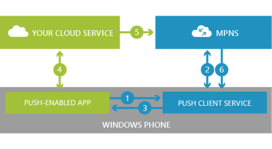
1、你的应用程序向推送客户端服务发送一个推送URI的请求。
2、推送客户端服务与Microsoft Push Notification Service交互，然后MPNS向推送客户端服务返回一条通知URI。
3、推送客户端服务将通知URI返回给你的应用程序。
4、你的应用程序将推送URI发送到你的云服务中。
5、当你的云服务需要向你的应用程序发送消息的时候，他使用这个通知URI向MPNS发送一条通知。
6、MPNS将这条推送通知发送到你的应用程序。
根据推送通知的格式以及附加的有效载荷，该信息以原始数据的形式被发送给应用程序，然后应用程序的图标会被更新，或者显示toast通知。在发送完推送通知之后，MPNS给你的云服务会返回一个回执码，表示该消息已经被MPNS接收并将在何时的时机发送给目标设备。尽管MPNS并没有提供端到端的服务来确认你的推送通知已经从你的云服务发送到了你的手机中，如果该条消息不能被发送到设备中，MPNS会向你的云服务中返回一条错误码。更多关于回执和错误码的信息，请参见Windows Phone推送通知服务的响应代码。在MPNS表明消息无法被传递的时候，你的服务应该在需要的情况下重新提交这条消息。
Windows 应用商店应用
下图显示了发送推送通知过程中涉及的完整数据流：
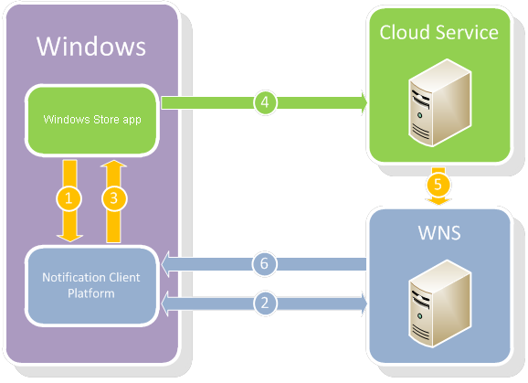
其中包括以下步骤：
1. 你的应用向通知客户端平台发送推送通知通道的请求。
2. 通知客户端平台请求 WNS 创建一个通知通道。该通道以统一资源标识符 (URI) 的形式返回调用设备。
3. 通知通道 URI 由 Windows 返回到你的应用。
4. 你的应用将 URI 发送到你自己的云服务。此回调机制是你自己的应用与你自己的服务之间的一个接口。你需要负责以安全保密的 Web 标准实现此回调。
5. 当你的云服务要发送一个更新时，它会使用该通道 URI 通知 WNS。此任务通过使用安全套接字层 (SSL) 发送 HTTP POST 请求（包括通知负载）来完成。此步骤要求进行身份验证。
6. WNS 接收到请求并将该通知路由到相应的设备。
Android
一个GCM的实现包括了谷歌提供的连接服务器，与连接服务器交互的第三方应用程序服务器，和在安卓设备上运行的启用了GCM的客户端应用程序。
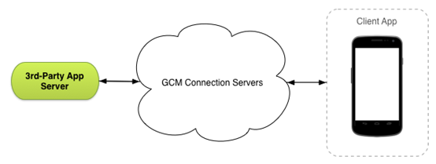
下面解释了这些部分如何交互的
●谷歌提供的GCM连接服务器从第三方应用程序服务器上获取消息，然后将消息发送到运行在设备上的启用了GCM的安卓应用程序（客户端应用）。截至目前，谷歌为HTTP 和 XMPP提供连接服务器。
●第三方应用程序服务器是你和你所选择的GCM连接服务器实施工作的一个组件，应用程序服务器将消息发送到GCM连接服务器，连接服务器将这些消息加入队列名存储，然后当设备在线的时候将其发送给设备。更多信息请参见实现GCM服务器。
●客户端应用程序是运行在设备上的启用了GCM的的应用程序。为了接收GCM消息，应用程序必须和GCM注册，并获取到注册ID，如果你使用XMPP(CCS)连接服务器，则客户端可以使用上传数据流来向服务端发送消息。关于实现客户端应用的更多信息，请参见实现GCM客户端。
IOS
推送通知的数据流是单向的，供应商为客户端应用程序创建一条包含了设备令牌的通知和有效载荷，供应商将通知发送到APNS，反过来APNS又将通知推送到设备中。
当供应商验证自身身份到APNS之后 他会将自己的主题发送到APNS服务器，这个主题标识了它将会向哪个应用程序提供数据。主题目前也是绑定目标应用程序的标识符。
下图表示了一条推送通知从供应商到客户端应用程序的路径。
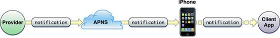
上图是一个大大简化了的APNS虚拟网络，实际情况中，APNS的设备端和供应商端都有许多连接点。在供应商那一侧的连接点叫做网关。有许多供应商，每个供应商都通过网关和APNS维持一个或多个持续的安全连接，这些供应商通过APNS向安装了他们应用程序的设备上推送通知，下图是一个比较接近实际的描述。
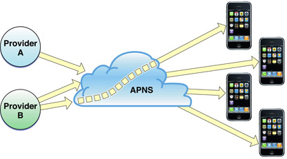
回执服务向供应商提供关于消息无法被成功送达的消息，例如因为目标应用程序已经从设备上卸载。更多信息，请参见“回执服务”。
WP/Win8的三种通知
Toast通知(Toast Notification)
Toast通知是一种直接在屏幕最上面弹出来的系统提示栏通知，总是显示在屏幕最顶部，会有声音和震动提示，十秒钟后悔自动消失，当单击提示栏时可以打开应用程序。例如，手机接收到新短信的时候，在屏幕顶端弹出来的消息就是Toast通知，单击进去就进入了短信的界面。Toast通知一般用于比较重要的通知提示，比如短信提醒、恶劣天气提醒等。
Toast通知的特定：
(1)发送的数据为指定的XML格式；
(2)如果程序正在运行，内容发送到应用程序中；
(3)如果程序不在运行，弹出Toast消息框显示消息；
(4)会临时打断用户的操作；
(5)消息的内容为App图标加上两个标题描述，标题为粗体字显示的字符串，副标题为非粗体字显示的字符串；
(6)用户可以单击消息进行跟踪。
Toast消息的传送格式如下：
示例
创建Toast通知发送端
创建一个ASP.NET应用，为应用添加一个表单页面并设为首页，为表单添加以下控件：
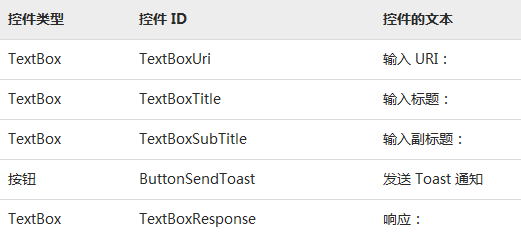
为ButtonSendToast添加Click处理程序：
创建Toast通知接受端
创建windows phone应用
为了演示在 Toast 消息中传递参数和导航信息，将添加另一个页面。MainPage 上的一个按钮将导航到第二个页面，并传递设置为“主页”的 NavigatedFrom 的参数。通过将MainPage.xaml 中的 <Grid x:Name="ContentPanel" Grid.Row="1" Margin="12,0,12,0"></Grid> 替换为以下代码：
为应用添加名为Page2的页面，并将Page2.xaml 中的 <Grid x:Name="ContentPanel" Grid.Row="1" Margin="12,0,12,0"></Grid> 替换为以下代码：
用下面的代码替换 MainPage 构造函数。该代码查看在应用的早期实例中是否已设置 Toast 通知通道。如果找到通知通道，则通知通道连接到通知事件。如果未找到通知通道，则创建通知通道，然后将其连接到通知事件：
public MainPage()
{
/// Holds the push channel that is created or found.
HttpNotificationChannel pushChannel;
// The name of our push channel.
string channelName = "ToastSampleChannel";
InitializeComponent();
// Try to find the push channel.
pushChannel = HttpNotificationChannel.Find(channelName);
// If the channel was not found, then create a new connection to the push service.
if (pushChannel == null)
{
pushChannel = new HttpNotificationChannel(channelName);
// Register for all the events before attempting to open the channel.
pushChannel.ChannelUriUpdated += new EventHandler(PushChannel_ChannelUriUpdated);
pushChannel.ErrorOccurred += new EventHandler(PushChannel_ErrorOccurred);
// Register for this notification only if you need to receive the notifications while your application is running.
pushChannel.ShellToastNotificationReceived += new EventHandler(PushChannel_ShellToastNotificationReceived);
pushChannel.Open();
// Bind this new channel for toast events.
pushChannel.BindToShellToast();
}
else
{
// The channel was already open, so just register for all the events.
pushChannel.ChannelUriUpdated += new EventHandler(PushChannel_ChannelUriUpdated);
pushChannel.ErrorOccurred += new EventHandler(PushChannel_ErrorOccurred);
// Register for this notification only if you need to receive the notifications while your application is running.
pushChannel.ShellToastNotificationReceived += new EventHandler(PushChannel_ShellToastNotificationReceived);
// Display the URI for testing purposes. Normally, the URI would be passed back to your web service at this point.
System.Diagnostics.Debug.WriteLine(pushChannel.ChannelUri.ToString());
MessageBox.Show(String.Format("Channel Uri is {0}",
pushChannel.ChannelUri.ToString()));
}
} 为推送通知添加 ChannelUriUpdated事件处理程序的代码：
void PushChannel_ChannelUriUpdated(object sender, NotificationChannelUriEventArgs e)
{
Dispatcher.BeginInvoke(() =>
{
// Display the new URI for testing purposes. Normally, the URI would be passed back to your web service at this point.
System.Diagnostics.Debug.WriteLine(e.ChannelUri.ToString());
MessageBox.Show(String.Format("Channel Uri is {0}",
e.ChannelUri.ToString()));
});
}为推送通知添加错误处理事件处理代码：
void PushChannel_ErrorOccurred(object sender, NotificationChannelErrorEventArgs e)
{
// Error handling logic for your particular application would be here.
Dispatcher.BeginInvoke(() =>
MessageBox.Show(String.Format("A push notification {0} error occurred. {1} ({2}) {3}",
e.ErrorType, e.Message, e.ErrorCode, e.ErrorAdditionalData))
);
}为 Page2.xaml 添加 OnNavigatedTo 事件处理程序。文本块显示传递给页面的NavigatedFrom 参数的值：
protected override void OnNavigatedTo(System.Windows.Navigation.NavigationEventArgs e)
{
base.OnNavigatedTo(e);
textBlockFrom.Text = "Navigated here from " + this.NavigationContext.QueryString["NavigatedFrom"];
}运行效果
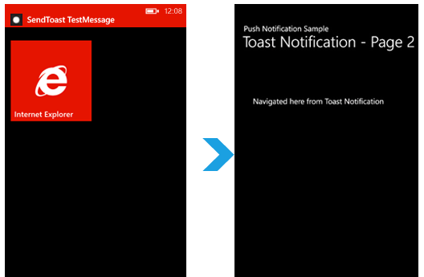
Tile通知(Tile Notification)
磁贴通知是一种针对于在开始屏幕上的应用程序提供的通知，如果应用程序不再开始屏幕中是不会接收到磁贴通知的。磁贴通知有三个元素：计数器(Count)、标题(Title)和背景(Background)。计数器是展现在磁贴图标右上角的数字，标题是展现在图标左下角的文本文字，背景图像则可以改变这个图标的背景。
磁贴通知的特点：
(1)发送的数据为指定的XML格式；
(2)不会向应用程序内部进行发送；
(3)可以改变开始屏幕中图标的内容（图片、文字等）；
(4)包含三个属性：背景、标题和计数器，每个属性都有固定的格式和位置，可以使用其中的一种属性，不一定三个属性一起使用。
磁贴通知的传送格式如下：
示例
创建Tile通知发送端
创建一个ASP.NET应用，为应用添加一个表单页面并设为首页，为表单添加以下控件：
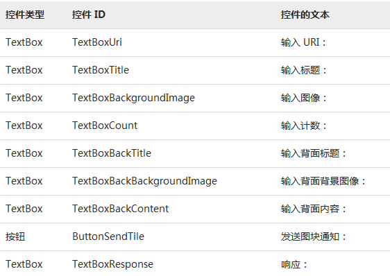
为 ButtonSendTile添加 Click 事件处理程序的代码，该代码将获取在第一个 TextBox 中输入的 URI，形成图块通知消息，然后将其发布到 Microsoft 推送通知服务：
创建Tile通知接受端
创建一个新的 Windows Phone 应用，用下面的代码替换 MainPage 构造函数。该代码查看在应用程序的早期实例中是否已设置图块通知通道。如果找到通知通道，则通知通道连接到通知事件。如果未找到通知通道，则创建通知通道，然后将其连接到通知事件：
public MainPage()
{
/// Holds the push channel that is created or found.
HttpNotificationChannel pushChannel;
// The name of our push channel.
string channelName = "TileSampleChannel";
InitializeComponent();
// Try to find the push channel.
pushChannel = HttpNotificationChannel.Find(channelName);
// If the channel was not found, then create a new connection to the push service.
if (pushChannel == null)
{
pushChannel = new HttpNotificationChannel(channelName);
// Register for all the events before attempting to open the channel.
pushChannel.ChannelUriUpdated += new EventHandler(PushChannel_ChannelUriUpdated);
pushChannel.ErrorOccurred += new EventHandler(PushChannel_ErrorOccurred);
pushChannel.Open();
// Bind this new channel for Tile events.
pushChannel.BindToShellTile();
}
else
{
// The channel was already open, so just register for all the events.
pushChannel.ChannelUriUpdated += new EventHandler(PushChannel_ChannelUriUpdated);
pushChannel.ErrorOccurred += new EventHandler(PushChannel_ErrorOccurred);
// Display the URI for testing purposes. Normally, the URI would be passed back to your web service at this point.
System.Diagnostics.Debug.WriteLine(pushChannel.ChannelUri.ToString());
MessageBox.Show(String.Format("Channel Uri is {0}",
pushChannel.ChannelUri.ToString()));
}
} 推送通知的ChannelUriUpdated和ErrorOccurred事件与Toast相同
运行效果
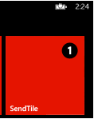
如果您设置图块背面的任何属性，则几秒之后图块将翻转图块以显示其背面。如果您将某个字段保留空白（如“标题”），则不会更新该字段。
原生通知(Raw Notification)
原生通知是一种只针对于正在运行的应用程序而提供的通知，如果使用了原生通知的应用程序没有运行，而服务器又给应用程序发送了消息的情况下，那么这一条原生通知就会被微软的推送服务器所丢弃。原生通知一般都是一般是用于给正在运行的应用程序发送消息，比如即时通讯软件的好友上线通知等。
原生通知具有以下特点：
(1)可以发送任何格式的数据；
(2)有效载荷最大为1KB；
(3)只有在使用原生通知的应用程序运行的情况下才能接收到消息。
(4)允许在用户使用时更新用户界面。
原生通知的传送格式可以是任意的字符串格式。
示例
创建原生通知发送端
创建方式与以上两种通知相同，不同的是表单控件和按钮的Click处理事件，原生通知的表单控件如下：
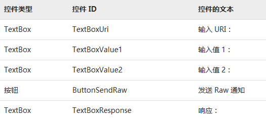
ButtonSendRaw的Click事件处理程序如下：
创建原生通知接受端
创建方式和Toast以及Tile通知基本相同，区别在于原生通知需要添加HttpNotificationReceived事件，事件处理程序如下：
void PushChannel_HttpNotificationReceived(object sender, HttpNotificationEventArgs e)
{
string message;
using (System.IO.StreamReader reader = new System.IO.StreamReader(e.Notification.Body))
{
message = reader.ReadToEnd();
}
Dispatcher.BeginInvoke(() =>
MessageBox.Show(String.Format("Received Notification {0}:\n{1}",
DateTime.Now.ToShortTimeString(), message))
);
}运行效果
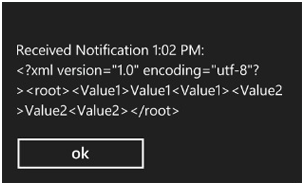
运行的 Windows Phone 应用时，您应该能够收到 Raw 通知。
注意：仅当应用运行时才会收到此通知